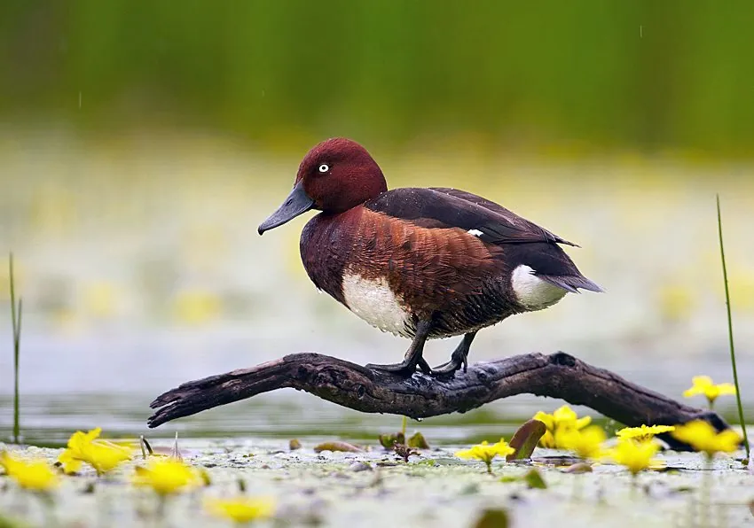

鸟类 · 动物界
白眼潜鸭 Aythya nyroca

欧亚大陆的深栗色潜水鸭，雄鸟通体栗红、眼睛白色、尾下雪白，善潜水取食水草，全球种群呈下降趋势。
- 分类
- 门脊索动物门纲鸟纲目雁形目科鸭科属潜鸭属
- 栖息环境
- 东欧至中亚的浅水湖泊、沼泽、三角洲与池塘，冬季也到河口和稻田
- 地理分布
- 繁殖于东欧、中亚至西伯利亚西南部，越冬于地中海、非洲北部、中东和南亚
- 保护级别
- IUCN 近危（NT）
物种志
白眼潜鸭体长 38–42 cm，体重 450–700 g。雄鸟头部、颈部和胸部深栗红色，背部暗褐，体侧栗褐，尾下覆羽纯白，眼睛白色，喙灰黑色。雌鸟通体暗褐色，眼周有浅色环，尾下覆羽仍为白色，飞行时白色肛周十分显眼。
它们繁殖于东欧、中亚至西伯利亚西南部的湖泊与沼泽，冬季南迁至地中海沿岸、非洲北部、中东和南亚。白眼潜鸭偏爱水生植物丰富的浅水湖泊、三角洲和池塘，常潜水取食水草、种子、螺类和水生昆虫，夜间也会到稻田觅食。繁殖期在 5–7 月，巢建于芦苇丛中，每窝产卵 7–11 枚，雌鸟孵化约 25–28 天。由于湿地排水、污染和狩猎，其种群持续下降，被列为近危物种。
形态与习性
- 食性水草、种子、螺类和水生昆虫
- 体长38–42 cm
- 体重450–700 g
- 繁殖5–7 月，每窝 7–11 枚，孵化 25–28 天
- 寿命约 10 年
- 特征尾下覆羽纯白，飞行时十分醒目
趣味知识
- 飞行时尾下那片纯白的羽毛像一块醒目的标记，是野外识别它的捷径。
- 白眼潜鸭多在夜间迁徙，白天成小群在安静的湖湾休息。
- 遇到危险时它们常潜水躲避，而不是立刻起飞。